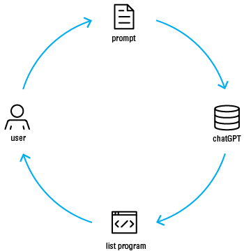

My first experience leveraging AI to do design work.
At Dubberly Design I was working with a client called DrumWave, a brazilian data company. Their logo was a seven set venn diagram, with each set assigned a color, and each section was the average color of the overlapping sets.
This results in 128 colors in the logo.
Originally the seven colors were mathematically calculated to evenly split the color wheel, but this resulted in them being not quite optically balanced.
So I was tasked with redrawing the logo with a new set of optically balanced seven colors. To calculate the resulting averages by hand would have taken hours, and would need to be done for every iteration.
I knew this could be automated, so I turned to the then new chatGPT to figure out how.
At first I had it create a python program to take in a set of seven hexcodes, and return the 128 average hex codes.
Then I had it return an svg of the 128 color palettes, so one could use the eyedropper tool to recolor the logo.

Finally I had it create a program that takes as an input 7 colors, calculates the 128 colors, and recolors a given svg file provided to it. This way I had fully automated the process of creating logo variations.
This was the first time I had used an LLM for something useful in the design process, and was a revelation for me and for the other designers at Dubberly Design.